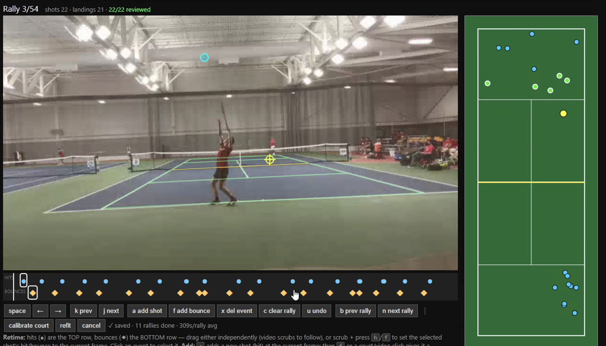
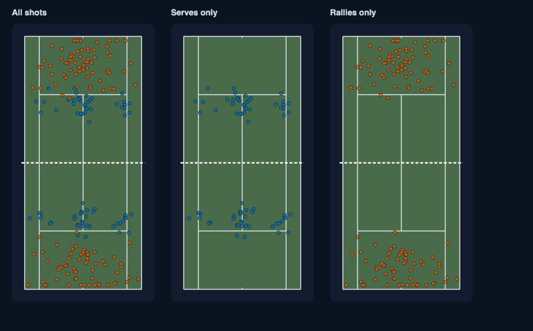
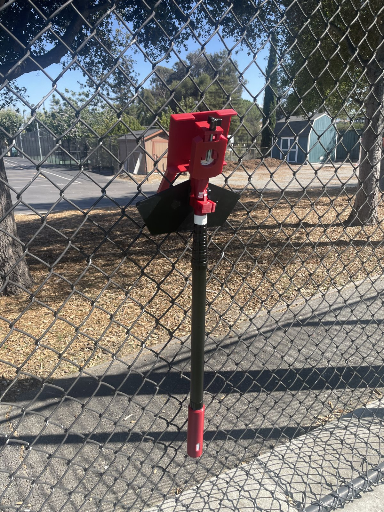
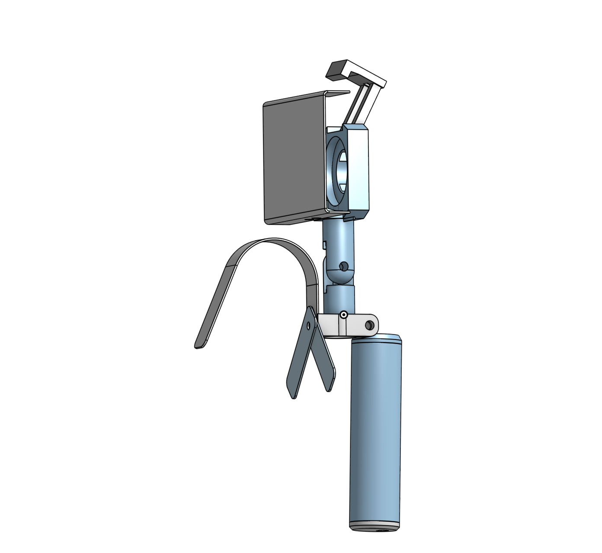
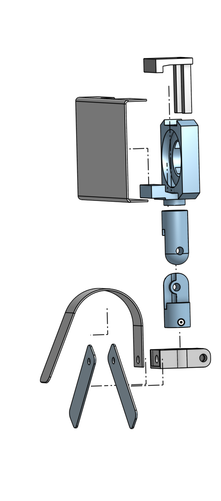
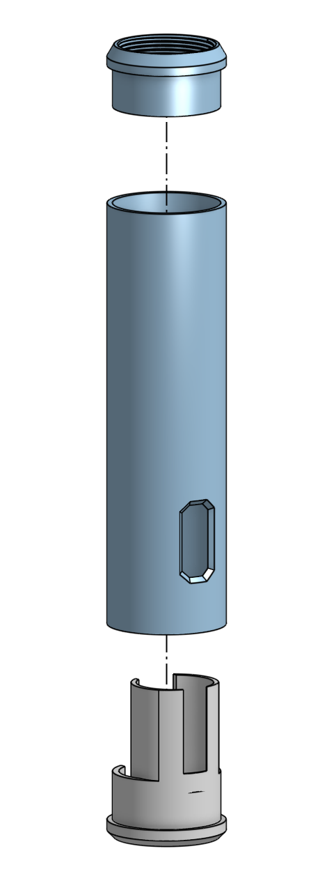

In summer 2026 I interned at SharpEye Performance, a startup building an AI tennis coaching app. Here is how each of my three projects went.
Computer Vision Tracking
Fixing the foundation
The inherited ball tracker flagged a ball on 99.6% of frames, almost all wrong, because of a model-loading bug. I replaced it with a working model that found the ball about 80% of the time during rallies. I also built a point splitter for broadcast video, which cuts away between points.
Better labels, better model
The hit detector started at an F1 of 0.17 against ground-truth labels. I added frame-accurate labels, corrected a timing offset between video and labels, and grew training from 1 to 6 matches, which raised F1 to 0.55. The team adopted it as the default model.
Making labeling fast
I built a watch-and-correct tool where a person reviews the model's hits and bounces rally by rally. With a good draft, 90% of shots were accepted as-is at about 15 seconds per rally.
Hand-charting the ground truth
Automated labels had real errors, so the team switched to hand-charted matches as the accuracy standard. I charted full matches shot by shot, and one of mine was used to choose the shipped model. Measured against these charted matches, the team's detector reached 0.75–0.83 F1 on most held-out matches.
Takeaway: Label quality drove performance more than model architecture did, and models need to be tested on your own data, not published benchmarks.


Filming Stick
Define the problem
A teardown of competitor mounts showed the biggest complaint: you have to unclip the pole from the fence to change the camera angle.
Design around real parts
I designed a tilt you adjust from the bottom of the pole, and fit my custom parts to purchased hardware like the phone clamp and charger. This pushed my CAD skills a lot.
Prototype and iterate
We built and tested the prototype on a court fence, then compared hydraulic and pneumatic tilt options and started thinking about design for manufacturing.
Takeaway: I went through the full product design cycle, from defining a problem to designing around real constraints to iterating on a prototype.




Scoring Models & App
A different kind of model
Instead of predicting who wins, I built ratings that compare a player's match to what their skill level (UTR) predicts, so a player can hear "you served like a 16.2 today."
Expected vs. actual
I used linear regression on thousands of charted matches to estimate expected performance, then turned each player's result above or below that into a rating.
Skill vs. luck
One match is a small sample, so a lot of the variation is luck. I measured how much and scaled it out, so the ratings don't overreact to one lucky or unlucky day.
Into the product
I connected the ratings to the app's match reports and built a shot map in the app.
Takeaway: A lot of a single result is noise, which runs against the sports idea that every result is earned. I learned how to design a fair comparison metric.